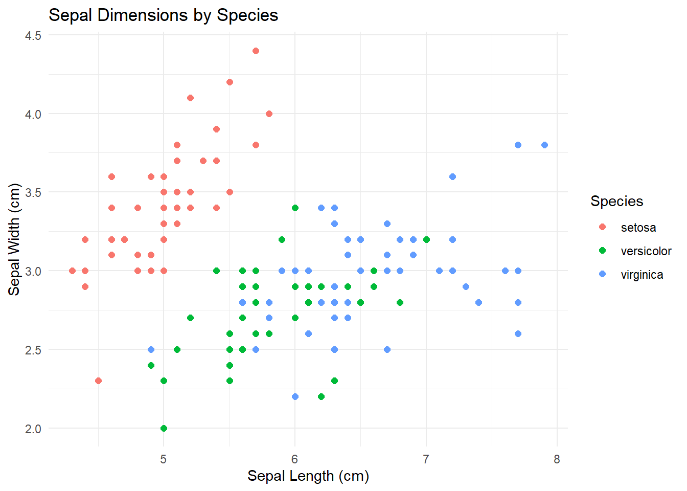
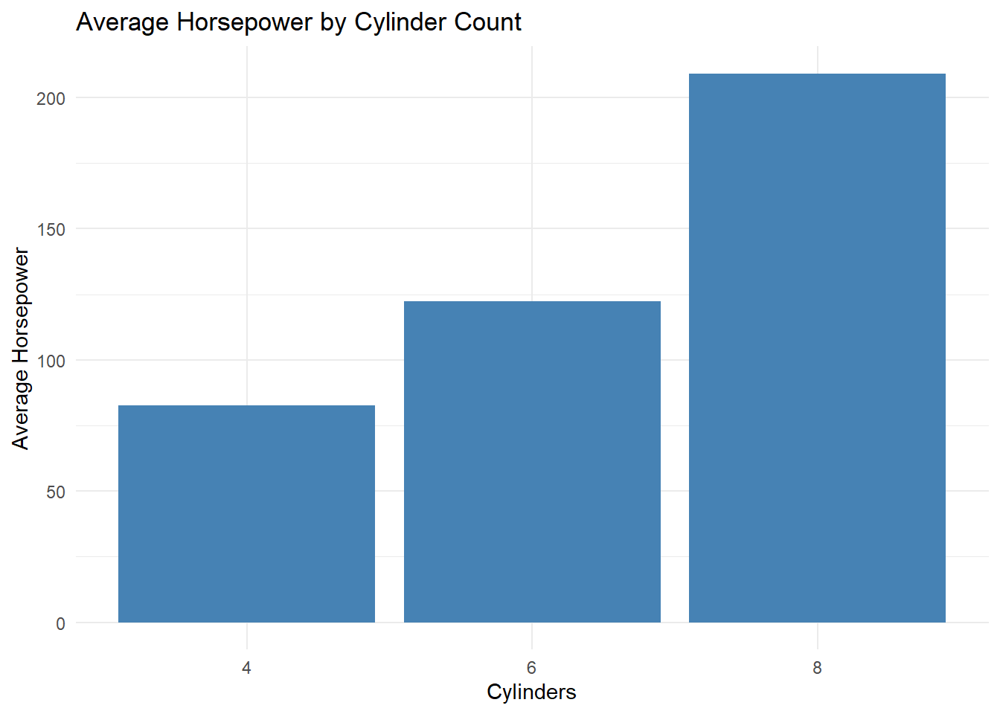
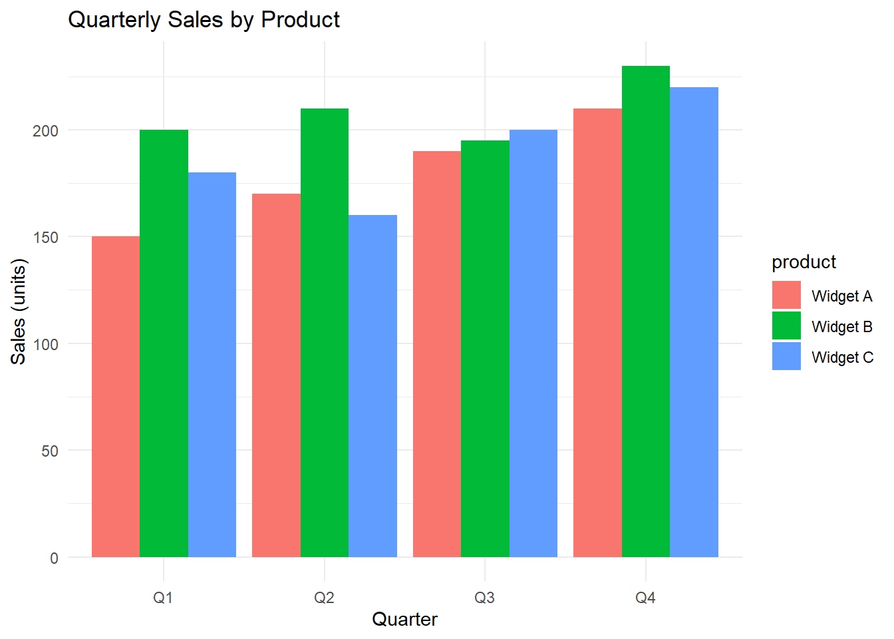
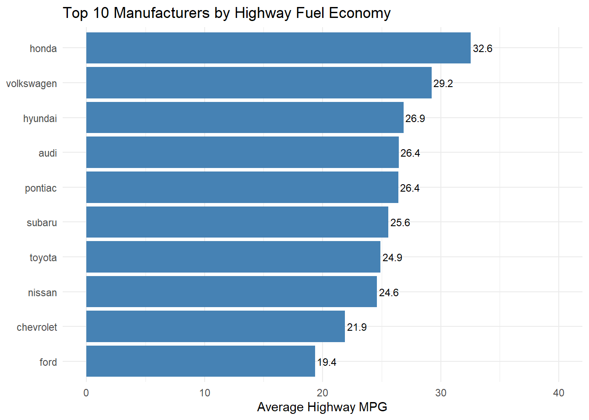
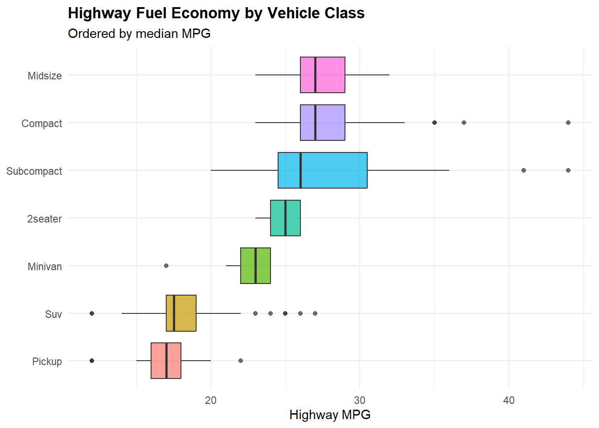

3 Your Data Analysis Toolkit
This chapter introduces the core set of tools you will use throughout this book. Think of it as the orientation session before your first day at the office — a 30,000-foot overview before we dive into individual packages later.
3.1 What is the Tidyverse?
The tidyverse is a collection of R packages built for data science. They were created primarily by Hadley Wickham and the team at Posit (formerly RStudio), and they all follow the same design philosophy. That means once you learn one package, the others feel familiar — like walking into a new franchise location and already knowing the menu.
The “tidy” in tidyverse boils down to two big ideas:
Tidy data. Your data should be organized so that each variable is a column, each observation is a row, and each cell has one value. (More on this soon — it matters more than you think.)
Tidy code. Your code should read like a sentence, not an encrypted ransom note. Tidyverse functions have verb-based names —
filter(),select(),mutate(),summarize()— so a pipeline of code practically narrates what you are doing.
3.2 Installing and Loading the Tidyverse
One install, many packages:
install.packages("tidyverse")One library call to load the core set:
When you run library(tidyverse), R prints two things. First, the core packages it just loaded. Second, any conflicts — cases where a tidyverse function has the same name as one already loaded. You will usually see:
-
dplyr::filter()masksstats::filter() -
dplyr::lag()masksstats::lag()
Do not panic. This just means that typing filter() now calls the dplyr version (which is what you want 99% of the time). If you ever need R’s different built-in function with the same name, use stats::filter().
You can also load packages individually if you prefer a lighter footprint:
3.3 Core Tidyverse Packages
Each core package handles a specific job in your data analysis workflow. Here is the lineup — think of them as departments in a well-run company.
3.3.1 ggplot2 — Data Visualization
ggplot2 lets you build plots layer by layer instead of picking from a fixed menu of chart types. It is the tidyverse’s crown jewel, and you will spend a lot of quality time with it. Chapters 10 and 11 go deep.
ggplot(iris, aes(x = Sepal.Length, y = Sepal.Width, color = Species)) +
geom_point(size = 2) +
labs(title = "Sepal Dimensions by Species",
x = "Sepal Length (cm)", y = "Sepal Width (cm)") +
theme_minimal()
Figure 3.1: A ggplot2 scatterplot of the iris dataset.
3.3.2 dplyr — Data Manipulation
dplyr is your data wrangling workhorse. It gives you a handful of verbs that handle most of what you need: filter() rows, select() columns, mutate() to create new variables, arrange() to sort, summarize() to aggregate, and group_by() to do all of the above within groups. Chapter 7 covers it in detail.
mtcars %>%
group_by(cyl) %>%
summarize(
n = n(),
avg_mpg = mean(mpg),
avg_hp = mean(hp)
)
#> # A tibble: 3 × 4
#> cyl n avg_mpg avg_hp
#> <dbl> <int> <dbl> <dbl>
#> 1 4 11 26.7 82.6
#> 2 6 7 19.7 122.
#> 3 8 14 15.1 209.Three rows, one per cylinder group. The pattern is clear: more cylinders means more horsepower (from 83 to 209) but worse fuel economy (from 27 to 15 mpg). That is a classic trade-off, summarized in three lines of code.
3.3.3 tidyr — Data Tidying
tidyr reshapes your data between “wide” and “long” formats with pivot_longer() and pivot_wider(). If you have ever wrestled with a spreadsheet where the column headers are actually data values, tidyr is your new best friend. Chapter 8 has the details.
3.3.4 readr — Data Import
readr reads rectangular data from CSV, TSV, and other delimited files. Its read_csv() is fast, produces tibbles, and has sensible defaults (no surprise factor conversions). Chapter 4 covers data import.
3.3.5 purrr — Functional Programming
purrr gives you map() functions that apply an operation to every element of a list or vector. It is like VLOOKUP’s cooler, more powerful cousin. Chapter 17 goes deeper.
map_dbl(iris[, 1:4], mean)
#> Sepal.Length Sepal.Width Petal.Length Petal.Width
#> 5.843333 3.057333 3.758000 1.199333One line computed the mean of all four numeric columns: Sepal.Length averages 5.84 cm, Sepal.Width 3.06 cm, Petal.Length 3.76 cm, and Petal.Width 1.20 cm. Petal measurements are smaller on average than sepal measurements.
3.3.6 tibble — Modern Data Frames
Tibbles are data frames that learned manners. They print neatly, never silently convert your strings to factors, and have stricter rules that prevent subtle bugs. We will talk more about them later in this chapter.
3.3.7 stringr — String Manipulation
stringr handles text data. Every function starts with str_ and takes a character vector first, so it plays nicely with pipes. Chapter 14 covers it.
fruits <- c("apple", "banana", "cherry", "date")
str_detect(fruits, "an")
#> [1] FALSE TRUE FALSE FALSE
str_to_upper(fruits)
#> [1] "APPLE" "BANANA" "CHERRY" "DATE"3.3.8 forcats — Working with Factors
forcats makes categorical variables less painful. Reorder levels, collapse categories, recode labels — all the things you wish Excel could do cleanly. (The name is an anagram of “factors.” Nerdy, but fun.) Chapter 15 has more.
3.3.9 lubridate — Dates and Times
lubridate makes dates and times behave. Parse them, extract components, do arithmetic — without the headaches that dates usually cause. Chapter 16 covers it.
3.3.10 Beyond the Core
The broader tidyverse ecosystem includes packages like readxl (Excel files), haven (SPSS/Stata/SAS), httr2 (web APIs), rvest (web scraping), and glue (string interpolation). These are not loaded by library(tidyverse) but can be installed individually when you need them.
3.4 The Pipe Operator
If there is one thing you take away from this chapter, let it be the pipe. It is the single most important concept in the tidyverse, and once it clicks, you will never want to go back.
3.4.1 What Does the Pipe Do?
The pipe takes the thing on its left and feeds it as the first argument to the function on its right. That is it. That is the whole idea.
The magrittr pipe %>% (loaded with the tidyverse):
x %>% f(y)is the same asf(x, y)
The native pipe |> (available since R 4.1):
x |> f(y)is the same asf(x, y)
For everyday work, they are interchangeable. This book uses %>% because it is the established tidyverse convention, but |> works fine too.
3.4.2 Why the Pipe Changes Everything
Think of the pipe as an assembly line. Raw materials go in on one end, each station does one job, and the finished product comes out the other end. Without the pipe, your code looks like either a Russian nesting doll or a cluttered warehouse of temporary variables. Neither is fun.
Let us say you want to take the mtcars dataset, keep only 6-cylinder cars, pick three columns, and sort by fuel economy.
Without pipes — nested calls (read inside-out, good luck):
arrange(select(filter(mtcars, cyl == 6), mpg, hp, wt), mpg)
#> mpg hp wt
#> Merc 280C 17.8 123 3.440
#> Valiant 18.1 105 3.460
#> Merc 280 19.2 123 3.440
#> Ferrari Dino 19.7 175 2.770
#> Mazda RX4 21.0 110 2.620
#> Mazda RX4 Wag 21.0 110 2.875
#> Hornet 4 Drive 21.4 110 3.215Reading this is like trying to understand a sentence that was written backwards. The first thing that happens (filter) is buried in the middle.
Without pipes — intermediate variables (clutters your workspace):
step1 <- filter(mtcars, cyl == 6)
step2 <- select(step1, mpg, hp, wt)
step3 <- arrange(step2, mpg)
step3
#> mpg hp wt
#> Merc 280C 17.8 123 3.440
#> Valiant 18.1 105 3.460
#> Merc 280 19.2 123 3.440
#> Ferrari Dino 19.7 175 2.770
#> Mazda RX4 21.0 110 2.620
#> Mazda RX4 Wag 21.0 110 2.875
#> Hornet 4 Drive 21.4 110 3.215Readable, but now you have three temporary variables floating around like Post-it notes you forgot to throw away.
With the pipe (read top-to-bottom, like a recipe):
mtcars %>%
filter(cyl == 6) %>%
select(mpg, hp, wt) %>%
arrange(mpg)
#> mpg hp wt
#> Merc 280C 17.8 123 3.440
#> Valiant 18.1 105 3.460
#> Merc 280 19.2 123 3.440
#> Ferrari Dino 19.7 175 2.770
#> Mazda RX4 21.0 110 2.620
#> Mazda RX4 Wag 21.0 110 2.875
#> Hornet 4 Drive 21.4 110 3.215Now it reads like plain English: “Take mtcars, then filter for 6 cylinders, then select three columns, then arrange by mpg.” Clean. Clear. No junk variables. This is why people love the pipe.
3.4.3 More Pipe Examples
Summarizing data by group:
iris %>%
group_by(Species) %>%
summarize(
mean_petal_length = mean(Petal.Length),
sd_petal_length = sd(Petal.Length),
count = n()
)
#> # A tibble: 3 × 4
#> Species mean_petal_length sd_petal_length count
#> <fct> <dbl> <dbl> <int>
#> 1 setosa 1.46 0.174 50
#> 2 versicolor 4.26 0.470 50
#> 3 virginica 5.55 0.552 50Piping straight into a chart:
mtcars %>%
group_by(cyl) %>%
summarize(avg_hp = mean(hp)) %>%
ggplot(aes(x = factor(cyl), y = avg_hp)) +
geom_col(fill = "steelblue") +
labs(x = "Cylinders", y = "Average Horsepower",
title = "Average Horsepower by Cylinder Count") +
theme_minimal()
Figure 3.2: Average horsepower by number of cylinders.
One thing to watch: when piping into ggplot2, you switch from %>% to + after the ggplot() call. The + is how ggplot2 layers work — it is not a pipe.
3.4.4 The Dot Placeholder
Sometimes you need the piped value somewhere other than the first argument. The magrittr pipe lets you use . as a placeholder:
# Pipe into a non-first argument position using the dot
c(3, 7, 1, 9, 2) %>% paste("The number is", .)
#> [1] "The number is 3" "The number is 7" "The number is 1" "The number is 9"
#> [5] "The number is 2"
# Using the dot in a model formula context
mtcars %>%
lm(mpg ~ wt + hp, data = .) %>%
summary() %>%
.$r.squared
#> [1] 0.8267855Here, mtcars goes into the data argument of lm() (not the first argument), because we told it exactly where with the dot.
3.5 Tidy Data Principles
“Tidy data” is a specific way of organizing data that makes everything downstream — analysis, visualization, modeling — dramatically easier. The three rules:
- Each variable forms a column.
- Each observation forms a row.
- Each value occupies a single cell.
Sounds obvious, right? And yet, a shocking amount of real-world business data violates these rules. Let us look at a classic example.
3.5.1 The Messy Sales Spreadsheet
Imagine your regional sales manager emails you this quarter’s numbers. It looks like a perfectly normal spreadsheet:
untidy_sales <- tibble(
product = c("Widget A", "Widget B", "Widget C"),
Q1 = c(150, 200, 180),
Q2 = c(170, 210, 160),
Q3 = c(190, 195, 200),
Q4 = c(210, 230, 220)
)
untidy_sales
#> # A tibble: 3 × 5
#> product Q1 Q2 Q3 Q4
#> <chr> <dbl> <dbl> <dbl> <dbl>
#> 1 Widget A 150 170 190 210
#> 2 Widget B 200 210 195 230
#> 3 Widget C 180 160 200 220Looks fine, right? Wrong. This is untidy because Q1, Q2, Q3, and Q4 are not variable names — they are values of a variable called “quarter.” The actual data has been smeared across multiple columns.
Here is the tidy version, created with pivot_longer():
tidy_sales <- untidy_sales %>%
pivot_longer(cols = Q1:Q4, names_to = "quarter", values_to = "sales")
tidy_sales
#> # A tibble: 12 × 3
#> product quarter sales
#> <chr> <chr> <dbl>
#> 1 Widget A Q1 150
#> 2 Widget A Q2 170
#> 3 Widget A Q3 190
#> 4 Widget A Q4 210
#> 5 Widget B Q1 200
#> 6 Widget B Q2 210
#> 7 Widget B Q3 195
#> 8 Widget B Q4 230
#> 9 Widget C Q1 180
#> 10 Widget C Q2 160
#> 11 Widget C Q3 200
#> 12 Widget C Q4 220Now every row is one product in one quarter. Every column is a variable. Every cell holds one value. That is tidy.
3.5.2 Why Should You Care?
Because tidy data plays beautifully with the tidyverse. Want a grouped bar chart comparing products by quarter? With tidy data, it is one pipeline:
tidy_sales %>%
ggplot(aes(x = quarter, y = sales, fill = product)) +
geom_col(position = "dodge") +
labs(title = "Quarterly Sales by Product",
x = "Quarter", y = "Sales (units)") +
theme_minimal()
Figure 3.3: Quarterly sales by product, created easily from tidy data.
With the messy version, you would need a lot more manual reshaping. Tidy data saves you time and headaches. Get your data tidy first, and everything else falls into place.
3.6 Tibbles vs Data Frames
Short version: tibbles are data frames that learned manners. They are technically still data frames under the hood, but they behave more predictably. Here is what you need to know.
They print nicely. Tibbles show just the first 10 rows and fit columns to your screen, instead of dumping 10,000 rows into your console.
# A tibble prints neatly
as_tibble(mtcars)
#> # A tibble: 32 × 11
#> mpg cyl disp hp drat wt qsec vs am gear carb
#> <dbl> <dbl> <dbl> <dbl> <dbl> <dbl> <dbl> <dbl> <dbl> <dbl> <dbl>
#> 1 21 6 160 110 3.9 2.62 16.5 0 1 4 4
#> 2 21 6 160 110 3.9 2.88 17.0 0 1 4 4
#> 3 22.8 4 108 93 3.85 2.32 18.6 1 1 4 1
#> 4 21.4 6 258 110 3.08 3.22 19.4 1 0 3 1
#> 5 18.7 8 360 175 3.15 3.44 17.0 0 0 3 2
#> 6 18.1 6 225 105 2.76 3.46 20.2 1 0 3 1
#> 7 14.3 8 360 245 3.21 3.57 15.8 0 0 3 4
#> 8 24.4 4 147. 62 3.69 3.19 20 1 0 4 2
#> 9 22.8 4 141. 95 3.92 3.15 22.9 1 0 4 2
#> 10 19.2 6 168. 123 3.92 3.44 18.3 1 0 4 4
#> # ℹ 22 more rowsNo sneaky partial matching. Tibbles require exact column names. Fewer bugs, fewer “wait, what just happened?” moments.
No surprise factor conversions. Tibbles keep your text as text. No silent conversions.
Consistent subsetting. Pulling one column from a tibble with [ always gives you a tibble back, so behavior is predictable.
In practice, you rarely need to think about this distinction. Tidyverse functions return tibbles automatically. If older code needs a standard data frame, just use as.data.frame().
3.7 The Tidyverse Workflow
The tidyverse packages are not random — they map to stages of a data analysis pipeline:
- Import your data (readr, readxl, haven)
- Tidy it into a clean structure (tidyr)
- Transform — filter, create variables, summarize (dplyr)
- Visualize patterns (ggplot2)
- Model relationships (tidymodels ecosystem)
- Communicate findings (R Markdown, Quarto)
Let us walk through a quick example with the mpg dataset (fuel economy for 38 car models, 1999–2008). Think of this as a mini consulting engagement.
3.7.1 Import and Explore
Since mpg is built in, we skip the file import. In real life, you would use read_csv(). Let us see what we are working with:
glimpse(mpg)
#> Rows: 234
#> Columns: 11
#> $ manufacturer <chr> "audi", "audi", "audi", "audi", "audi", "audi", "audi", "…
#> $ model <chr> "a4", "a4", "a4", "a4", "a4", "a4", "a4", "a4 quattro", "…
#> $ displ <dbl> 1.8, 1.8, 2.0, 2.0, 2.8, 2.8, 3.1, 1.8, 1.8, 2.0, 2.0, 2.…
#> $ year <int> 1999, 1999, 2008, 2008, 1999, 1999, 2008, 1999, 1999, 200…
#> $ cyl <int> 4, 4, 4, 4, 6, 6, 6, 4, 4, 4, 4, 6, 6, 6, 6, 6, 6, 8, 8, …
#> $ trans <chr> "auto(l5)", "manual(m5)", "manual(m6)", "auto(av)", "auto…
#> $ drv <chr> "f", "f", "f", "f", "f", "f", "f", "4", "4", "4", "4", "4…
#> $ cty <int> 18, 21, 20, 21, 16, 18, 18, 18, 16, 20, 19, 15, 17, 17, 1…
#> $ hwy <int> 29, 29, 31, 30, 26, 26, 27, 26, 25, 28, 27, 25, 25, 25, 2…
#> $ fl <chr> "p", "p", "p", "p", "p", "p", "p", "p", "p", "p", "p", "p…
#> $ class <chr> "compact", "compact", "compact", "compact", "compact", "c…3.7.2 Transform
Which manufacturers have the best highway fuel economy? Let us find the top 10:
top_manufacturers <- mpg %>%
group_by(manufacturer) %>%
summarize(
avg_hwy = mean(hwy),
n_models = n(),
.groups = "drop"
) %>%
arrange(desc(avg_hwy)) %>%
slice_head(n = 10)
top_manufacturers
#> # A tibble: 10 × 3
#> manufacturer avg_hwy n_models
#> <chr> <dbl> <int>
#> 1 honda 32.6 9
#> 2 volkswagen 29.2 27
#> 3 hyundai 26.9 14
#> 4 audi 26.4 18
#> 5 pontiac 26.4 5
#> 6 subaru 25.6 14
#> 7 toyota 24.9 34
#> 8 nissan 24.6 13
#> 9 chevrolet 21.9 19
#> 10 ford 19.4 25Honda leads the pack at 32.6 average highway mpg, followed by Volkswagen and Hyundai. The n_models column is important context — Honda’s impressive average is based on 9 models, while some manufacturers with high averages might only have 2–3 models in the dataset. Sample size matters when comparing group averages.
3.7.3 Visualize
Now let us turn those numbers into a chart your boss would actually want to see:
top_manufacturers %>%
mutate(manufacturer = fct_reorder(manufacturer, avg_hwy)) %>%
ggplot(aes(x = avg_hwy, y = manufacturer)) +
geom_col(fill = "steelblue") +
geom_text(aes(label = round(avg_hwy, 1)), hjust = -0.1, size = 3) +
labs(
title = "Top 10 Manufacturers by Highway Fuel Economy",
x = "Average Highway MPG",
y = NULL
) +
theme_minimal() +
xlim(0, 40)
Figure 3.4: Top 10 manufacturers by average highway fuel economy.
And here is a complete pipeline — raw data to finished chart in one unbroken chain:
mpg %>%
mutate(class = str_to_title(class)) %>%
mutate(class = fct_reorder(class, hwy, .fun = median)) %>%
ggplot(aes(x = class, y = hwy, fill = class)) +
geom_boxplot(show.legend = FALSE, alpha = 0.7) +
coord_flip() +
labs(
title = "Highway Fuel Economy by Vehicle Class",
subtitle = "Ordered by median MPG",
x = NULL,
y = "Highway MPG"
) +
theme_minimal() +
theme(plot.title = element_text(face = "bold"))
Figure 3.5: Distribution of highway fuel economy by vehicle class, ordered by median.
This pipeline uses stringr, forcats, dplyr, and ggplot2 all in one chain. That is the tidyverse at its best: small, focused functions that snap together like LEGO bricks.
3.8 Getting Help
You will get stuck. Everyone does. Here is how to get unstuck fast.
3.8.1 Cheat Sheets (Your New Best Friends)
Posit publishes free, two-page PDF cheat sheets for most tidyverse packages. Print them out. Tape them to your wall. Seriously. Find them at https://posit.co/resources/cheatsheets/ or in RStudio under Help > Cheat Sheets. The dplyr, ggplot2, and tidyr cheat sheets alone will save you hours.
3.8.2 Googling Errors Like a Pro
When you get an error, copy the error message into Google (minus your specific variable names) and add “R” or “tidyverse.” Nine times out of ten, someone on Stack Overflow has already asked and answered your exact question. Tag your own questions with [r] and the package name (e.g., [dplyr], [ggplot2]).
3.8.3 Built-In Help
# Help on a specific function
?filter
# Browse all functions in a package
help(package = "dplyr")
# Long-form tutorials (vignettes)
browseVignettes("dplyr")3.8.4 Books (Free Online)
- R for Data Science (2nd ed.) — https://r4ds.hadley.nz/. The definitive tidyverse guide. If you read one book, make it this one.
- ggplot2: Elegant Graphics for Data Analysis (3rd ed.) — https://ggplot2-book.org/.
3.9 Summary
Here is the executive summary (see what we did there?):
- The tidyverse is a collection of R packages that share a common design philosophy. Learn one, and the others feel familiar.
- The pipe operator (
%>%or|>) chains operations into readable, left-to-right pipelines. It is the single most important concept in this chapter. - Tidy data — each variable a column, each observation a row, each value a cell — is the organizing principle that makes everything work smoothly.
- Tibbles are friendlier data frames with safer defaults.
- The tidyverse workflow (Import, Tidy, Transform, Visualize, Model, Communicate) gives you a structured approach to any data analysis project.
- When you get stuck, use cheat sheets, Google your error messages, and check Stack Overflow. You are not the first person to hit that error, and you will not be the last.
In the chapters ahead, we will roll up our sleeves and explore each of these packages in depth. Onward.